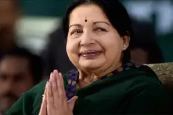

Jayalalithaa - Tamil Nadu’s first woman Chief Minister
Early Life & Background
Jayalalithaa Jayaraman was born on 24 February 1948 in Mysore (now in Karnataka). She lost her father at a young
age, and her mother, Sandhya, moved to Chennai to work as an actress to support the family. Jayalalithaa was
academically gifted, excelling in school, and was trained in classical dance and music. However, financial struggles
after her father’s death pushed her towards a career in films to support her family.
Entry into Cinema
Jayalalithaa entered the Tamil film industry in the 1960s and quickly rose to fame with her beauty, talent, and
versatility. She acted in over 140 films, mainly in Tamil, Telugu, and Kannada, and became one of the most popular
actresses of her time. She worked alongside legendary actors such as M.G. Ramachandran (MGR), who later played a
major role in shaping her political journey.
Transition to Politics
Under the mentorship of MGR, Jayalalithaa joined the AIADMK (All India Anna Dravida Munnetra Kazhagam) party in the
1980s. Initially facing resistance as a woman in politics, she gradually established herself as a powerful orator
and leader. After MGR’s death in 1987, she took over the party leadership, overcoming internal opposition and gender
bias to rise to prominence.
Political Career & Achievements
Jayalalithaa served as the Chief Minister of Tamil Nadu six times between 1991 and 2016, becoming the state’s first
woman to hold the position. Her governance was marked by populist welfare schemes such as Amma Canteens, Amma Water,
and Amma Pharmacies, which provided affordable food and services to the poor. She was admired as a strong
administrator who modernized infrastructure, promoted education, and improved healthcare in Tamil Nadu.
Challenges & Struggles
Her political career was not without controversy. Jayalalithaa faced multiple corruption charges and was even
imprisoned for a brief period. Despite these challenges, her popularity with the masses remained strong, and she
earned the affectionate title “Amma” (Mother) from her supporters, who saw her as a protector and provider.
Personal Life & Legacy
Jayalalithaa remained unmarried throughout her life and dedicated herself to public service. She passed away on 5
December 2016 in Chennai after prolonged illness, leaving behind a lasting legacy in both cinema and politics. She
is remembered as a trailblazer who broke barriers in a male-dominated political world and transformed Tamil Nadu’s
welfare landscape.